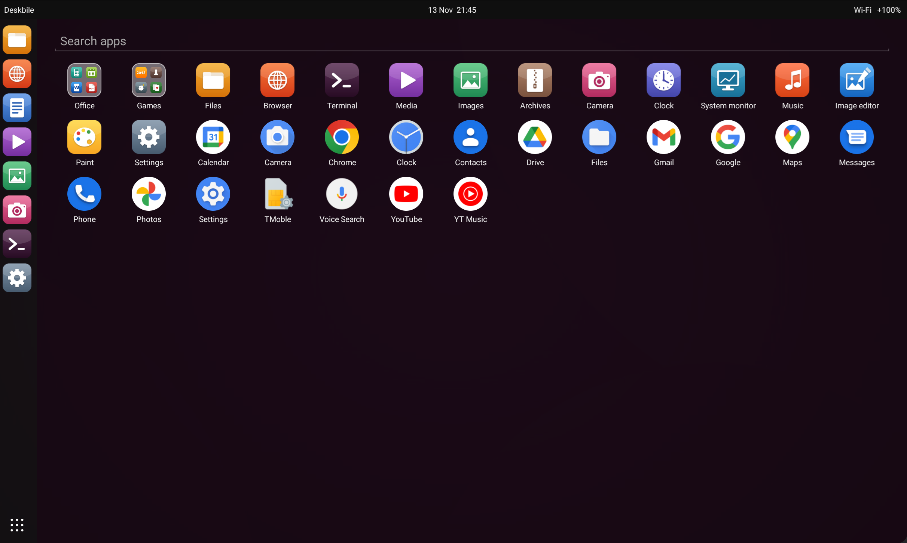

Conheça o Turn2Desk
Uma forma diferente de usar aquele tablet que você tem parado na gaveta.
Ele vira um mini desktop com janelas, barra de tarefas e vários aplicativos rodando ao mesmo tempo.

O que é o Turn2Desk?
O Turn2Desk deixa você usar o tablet como se fosse um computador de verdade. Em vez de ficar preso no modo tela cheia de um app só, você abre vários programas em janelas, arrasta, redimensiona e organiza como quiser.
Vem com 21 aplicativos prontos pra usar: navegador, gerenciador de arquivos, editor de texto, calculadora, player de música e mais. Tudo rodando em cima do seu tablet antigo!.
Ideal pra quem tem um tablet antigo e quer dar uma segunda vida pra ele.
Download
Escolha como prefere instalar: